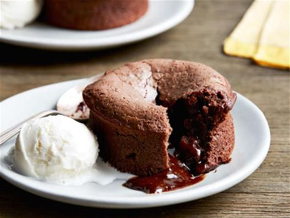

Chocolate Lava Cake

Discription
Chocolate Lava Cake is a decadent dessert that features a gooey, molten chocolate center. It's a favorite for chocolate lovers and a perfect way to end a special meal.
Ingredients
- 1/2 cup unsalted butter
- 4 oz semi-sweet chocolate
- 1 cup powdered sugar
- 2 large eggs
- 2 egg yolks
- 1 teaspoon vanilla extract
- 6 tablespoons all-purpose flour
- Pinch of salt
Steps
- Preheat the oven to 425°F (220°C). Grease and flour four ramekins.
- In a microwave-safe bowl, melt butter and chocolate together. Stir until smooth.
- Whisk in powdered sugar until well combined.
- Add eggs and egg yolks, one at a time, mixing well after each addition. Stir in vanilla extract.
- Fold in flour and a pinch of salt until just combined.
- Divide the batter evenly among the prepared ramekins.
- Bake for 12-14 minutes, or until the edges are set but the center is still soft.
- Remove from the oven and let them cool for a minute. Invert onto serving plates, and enjoy the oozing chocolate center!